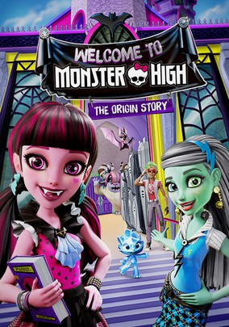

IMDB-Wertung: 5.5 / 10
IMDB-Wertung: 5.5 / 10  Metascore:
Metascore: 
When Dracula meets Frankie, they decide to create a school. But recruiting students always comes with its trials and tribulations.
Alternativ: Monster High: Welcome to Monster High
 IMDB-Wertung: 5.5 / 10 Metascore:
When Dracula meets Frankie, they decide to create a school. But recruiting students always comes with its trials and tribulations.
Jahr: 2016
Dauer: 73 Minuten
FSK: 6
Land: USA Studio: Fathom EventsTonspuren: DTS - ,
Untertitel:
Auflösung: 1080p (1920x1080) Größe: 5181 MB
Genre: Animation/Trick
Regisseur: Stephen Donnelly, Olly Reid, Jun Falkenstein
Drehbuch: earMUSIC
Soundtrack:
Darsteller:
 Debi Derryberry als Draculaura
Debi Derryberry als Draculaura Salli Saffioti als Clawdeen Wolf / Cleo De Nile
Salli Saffioti als Clawdeen Wolf / Cleo De Nile Jonquil Goode als Twyla / Ari, Tash Hauntington
Jonquil Goode als Twyla / Ari, Tash Hauntington Evan Smith als Deuce Gorgon
Evan Smith als Deuce Gorgon Sara Cravens als Clawdeen's Mom Harriet Wolf / Manager
Sara Cravens als Clawdeen's Mom Harriet Wolf / Manager Cam Clarke als Agent / Monster Boy Gargoyle / Monster Boy Vampire
Cam Clarke als Agent / Monster Boy Gargoyle / Monster Boy Vampire Ben Diskin als Gob / Zomboys
Ben Diskin als Gob / Zomboys Spike Spencer als Zomboys
Spike Spencer als Zomboys Cassandra Morris als Frankie Stein / Venus McFlytrap
Cassandra Morris als Frankie Stein / Venus McFlytrap Michael Sorich als Dracula
Michael Sorich als Dracula Julie Maddalena als Secretary
Julie Maddalena als SecretaryDatei: X:\Kinder Collections\Monster High\Willkommen an der Monster High - Wie alles begann (2016, FSK6, 1920x1080).mkv seit 07.04.2017
Festplatte: Kinder-Filme+Trick
 Es gibt insgesamt 12 Filme in der Gruppe 'Kinder Collections\Monster High'
Es gibt insgesamt 12 Filme in der Gruppe 'Kinder Collections\Monster High'